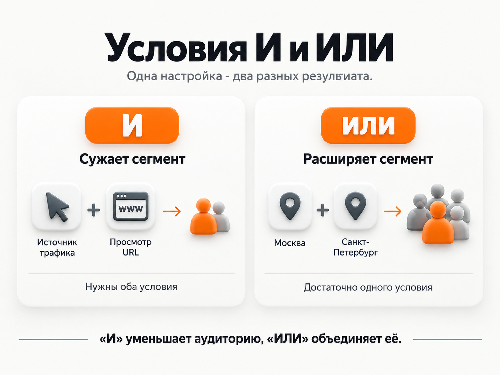

Яндекс Метрика
Сегменты в Яндекс Метрике: как создать и использовать
Сегменты в Яндекс Метрике позволяют выделить из общей статистики только нужную группу посетителей или визитов. Например, посмотреть отдельно людей, которые пришли из Яндекс Директа, заходили со смартфона, посетили определенную страницу или выполнили целевое действие.
Сегмент можно использовать просто для анализа или сохранить, чтобы возвращаться к нему в других отчетах. Сохраненные сегменты Метрики также можно применять в Яндекс Директе для работы с определенной аудиторией.
Что такое сегмент в Яндекс Метрике
Обычный отчет Метрики показывает общую картину. Например, вы видите 5 000 визитов, их источники, конверсию, отказы и другие показатели.
Сегментация позволяет сказать Метрике: покажи мне из этих данных только определенную часть.
Например:
- посетителей из Яндекс Директа;
- только мобильный трафик;
- пользователей из определенного города;
- людей, просмотревших страницу услуги;
- визиты с достижением конкретной цели;
- посетителей, которые заходили на сайт, но заявку не оставили;
- новых или вернувшихся посетителей;
- трафик по определенной UTM-метке.
Условия можно комбинировать. Поэтому вместо общего отчета можно получить довольно узкую выборку, например: посетители с рекламы, которые были на странице услуги, но не достигли цели «Отправка формы».
Главная ценность сегментов именно в этом. Средние показатели по сайту часто скрывают разницу между отдельными группами аудитории.
Как создать сегмент в Яндекс Метрике
Создать сегмент можно непосредственно из отчета Метрики. Отдельный раздел для первоначального создания искать не нужно.
Порядок действий:
- Откройте нужный счетчик Яндекс Метрики.
- Перейдите в отчет, с которым хотите работать. Для большинства задач можно начать, например, с отчета «Источники, сводка».
- Нажмите «Сегмент».
- Создайте произвольный сегмент.
- Выберите необходимое условие.
- При необходимости добавьте дополнительные условия.
- Примените сегмент.
После этого графики и таблицы отчета будут пересчитаны только для данных, которые соответствуют заданным условиям.
Яндекс также позволяет создавать сегмент непосредственно по значению строки в отчете. Например, можно выбрать определенный источник трафика или страницу и сформировать сегмент по этой строке.
Какие условия можно использовать
Набор условий в Метрике достаточно большой. Конкретный выбор зависит от задачи.
Источники трафика
Можно выделять пользователей по тому, откуда они пришли:
- рекламные системы;
- поисковые системы;
- социальные сети;
- сайты;
- прямые переходы;
- UTM-метки;
- конкретные рекламные кампании и другие параметры.
Я чаще всего использую такие сегменты, когда нужно разобраться, почему один источник дает заявки, а другой только расходует бюджет.
Например, можно отдельно посмотреть пользователей из рекламы и сравнить их с органическим трафиком.
Поведение на сайте
Сегменты можно строить по действиям посетителей:
- просмотр определенного URL;
- достижение цели;
- количество просмотренных страниц;
- время и другие доступные параметры визита.
Один из самых понятных примеров - посетители страницы конкретной услуги.
В условиях выбираем:
Поведение -> Просмотр URL
и задаем адрес нужной страницы.
Так можно отдельно анализировать людей, которые проявили интерес именно к этому направлению.
География и характеристики аудитории
Можно отделить статистику по стране, региону, городу, полу, возрасту и другим доступным характеристикам.
Например, если реклама работает сразу в нескольких регионах, сегментация помогает посмотреть, отличаются ли их показатели.
Устройства и технологии
Полезный вариант - разделить аудиторию по устройствам.
Например:
- смартфоны;
- компьютеры;
- планшеты.
Если общая конверсия сайта снизилась, иногда оказывается, что проблема есть только у мобильных пользователей. После сегментации это становится заметно намного быстрее.
Как работают условия И и ИЛИ

При настройке сложного сегмента нужно следить за логикой условий.
«И» означает, что должны одновременно выполняться все заданные условия.
Например:
Пришел из рекламы И посетил страницу /price/
В сегмент попадут только пользователи, для которых выполнены оба условия.
«ИЛИ» означает, что достаточно любого из перечисленных условий.
Например:
Москва ИЛИ Санкт-Петербург
В выборку попадут посетители из любого из этих городов.
В интерфейсе Метрики для некоторых типов условий доступны варианты «Выполнены все условия» и «Выполнено любое из условий». Первый соответствует логическому «И», второй - «ИЛИ».
Чем больше условий вы одновременно соединяете через «И», тем меньше обычно становится сегмент. Поэтому слишком сложную конструкцию имеет смысл проверить: возможно, вы случайно отсекли почти всю аудиторию.
Как сохранить сегмент в Метрике
Если сегмент нужен не один раз, его лучше сохранить.
После настройки условий:
- Нажмите «Сохранить как».
- Укажите понятное название.
- Сохраните сегмент.
После этого он появится среди сохраненных сегментов и будет доступен для повторного использования. Яндекс позволяет сохранить в веб-интерфейсе до 500 сегментов на один счетчик.
Называть сегменты лучше по смыслу:
Директ - посетили услуги - без заявки
РСЯ - мобильные
Посетили цены - без конверсии
Заявка - рекламный трафик
Названия вроде Сегмент 1, test2 или новый через несколько месяцев уже ничего не объясняют.
Где найти сохраненные сегменты
Сохраненные сегменты находятся в:
Настройки -> Сегменты
Здесь можно посмотреть созданные сегменты и увидеть количество посетителей за последние 7 и 30 дней. Метрика также показывает, используется ли конкретный сегмент для подбора аудитории в Яндекс Директе.
Если нужно изменить условия, откройте сегмент, отредактируйте их и используйте «Сохранить -> Сохранить изменения».
Сегмент или цель Метрики: в чем разница
Цель и сегмент решают разные задачи.
Цель фиксирует конкретное действие пользователя. Например:
- отправил форму;
- позвонил;
- добавил товар в корзину;
- посетил определенную страницу.
Сегмент выделяет группу пользователей или визитов по заданным характеристикам.
Например, сама отправка заявки может быть целью.
А сочетание:
пришел из Директа + был с мобильного устройства + не достиг цели заявки
уже является сегментом.
То есть цели удобно использовать внутри условий сегментации.
Перед анализом рекламы я рекомендую сначала убедиться, что сами цели работают правильно.
Как проверить цель в Яндекс Метрике
Для чего я использую сегменты на практике
Само создание сегментов смысла не имеет, если непонятно, какой вопрос мы пытаемся решить.
Есть несколько действительно полезных сценариев.
Сравнить качество разных источников
Можно создать отдельные сегменты для Поиска, РСЯ, органики или другого трафика и посмотреть:
- конверсию;
- достигнутые цели;
- страницы входа;
- поведение посетителей;
- качество заявок, если данные передаются в аналитику.
Так значительно полезнее анализировать рекламу, чем смотреть на средний показатель всего сайта.
Найти проблему на определенных устройствах
Создаем сегмент мобильных посетителей и сравниваем его с десктопом.
Если на компьютерах заявки идут нормально, а на смартфонах конверсия резко хуже, проблема может находиться уже не в рекламной кампании, а в мобильной версии сайта.
Посмотреть заинтересованных пользователей без заявки
Для услуг мне особенно полезен сценарий:
Посмотрели нужную страницу + не достигли цели заявки
Это уже более интересная аудитория, чем просто «все посетители сайта».
Ее можно отдельно исследовать в Метрике, а при достаточном размере использовать для дальнейшей работы с рекламой.
Сравнить тех, кто оставил заявку, с остальными
Можно выделить посетителей, достигших основной цели, и посмотреть:
- откуда они приходили;
- какие страницы посещали;
- какие устройства использовали;
- чем их поведение отличается от общей аудитории.
Так сегментация помогает искать закономерности, которые не видны в общей статистике.
Как оценить эффективность Яндекс Директа
Сегменты Метрики для ретаргетинга
Сохраненные сегменты Яндекс Метрики можно использовать в Яндекс Директе.
Например, создать аудиторию:
Посетили страницу услуги, но не оставили заявку
и затем повторно работать с этими пользователями рекламой.
Или, наоборот, исключить определенную аудиторию, если показы ей больше не нужны.
Сегменты Метрики автоматически обновляются. Новые данные добавляются после выполнения пользователем заданного условия, а сам сегмент регулярно пересчитывается. Яндекс указывает, что добавление новых данных может занимать до 180 минут.
В Директе собственный сегмент Метрики можно использовать в условиях формирования сегмента аудитории. Для такого применения Яндекс указывает минимальный размер от 100 пользователей.
На Поиске сегмент аудитории работает совместно с ключевыми фразами или автотаргетингом. В сетях его можно использовать непосредственно для показа нужной аудитории.
[Внутренняя ссылка: статья «Что такое РСЯ в Яндекс Директ»]
Пример сегмента для ретаргетинга
Допустим, у компании есть отдельная страница услуги:
site.ru/service/
Нужно вернуть рекламой пользователей, которые изучали услугу, но не отправили заявку.
В Метрике создаем условия:
Просмотр URL содержит /service/
и
Цель "Отправка формы" не достигнута
Сохраняем сегмент под понятным названием, например:
Услуга - просмотрели - без заявки
После этого его можно использовать при настройке аудитории в Директе.
Такой вариант обычно логичнее, чем показывать одинаковую ретаргетинговую рекламу вообще всем посетителям сайта. Человек, который случайно открыл одну статью блога, и человек, который изучал страницу конкретной услуги, находятся на разных этапах принятия решения.
Ошибки при настройке сегментов
Первая ошибка - создавать слишком сложный сегмент без необходимости.
Если одновременно добавить много ограничений, выборка может стать настолько маленькой, что анализ потеряет смысл.
Вторая - путать период отчета с условиями самого сегмента. Для сегментов, используемых в ретаргетинге, Яндекс отдельно указывает, что диапазон дат отчета сам по себе не определяет состав сегмента. В него попадают пользователи, соответствующие именно сохраненным условиям.
Третья - использовать сегменты без нормально настроенных целей. Если цель заявки фиксируется неправильно, сегмент «не оставили заявку» тоже будет сформирован неправильно.
Как проверить цель в Яндекс Метрике
Четвертая - сохранять десятки почти одинаковых сегментов с непонятными названиями. Сегментация должна упрощать анализ, а не создавать еще один раздел, в котором невозможно разобраться.
Коротко
Чтобы создать сегмент в Яндекс Метрике, откройте отчет, нажмите «Сегмент», задайте нужные условия и примените их. Если выборка потребуется повторно, нажмите «Сохранить как» и дайте ей понятное название.
Сегменты полезны для двух основных задач: анализа отдельных групп трафика и работы с аудиторией в Яндекс Директе. Их стоит создавать под конкретный вопрос, например «почему мобильная реклама хуже конвертируется» или «кто смотрел услугу, но не отправил заявку», а не просто накапливать в настройках счетчика.